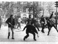
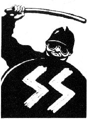
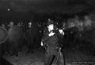
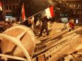
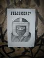

2006: amikor 1968 Budapestre érkezett(és találkozott 1956-tal)Mi történt Budapesten 2006
őszén? Erre a kérdésre sokféle választ kaphatunk. Történelmi szempontból kétféle megközelítés
létezik: a pusztán az eseményeket, azok időrendjét dokumentáló lexikális, illetve az események
hátterét, okait és összefüggéseit feltáró elemző szemlélet. Forradalmi események idején nincs helye
az utóbbinak, mert rendszerint évek kellenek ahhoz, hogy a mélyebb összefüggések feltáruljanak.
Ezek az évek már eltelni látszanak, mégsem hallunk egyetlen avatott szakembert sem, hogy az 1956
óta példátlan utcai események erkölcsi, történelmi, szociológiai vagy kulturális hátterét
boncolgatná. Mintha tabu lenne, mi vitt rá több ezer embert, hogy erőszakkal rontson neki az MTV
épületének, hónapokig táborozzon a Kossuth téren, és küzdjön mind a mai napig azért az álomért,
ami azon az éjszakán megfogalmazódott. Az álom azért is helyes kifejezés, mert felébredtünk
belőle, s mint az az álmokkal gyakran előfordul, utóbb nehezen tudjuk összerakni, miről is szólt,
s csak az érzés maradt, hogy jó volt.
Ahogy nem lehet kijelenteni, hogy 2006 csakis
Gyurcsány őszödi beszéde miatt robbant ki, 1968 sem intézhető el azzal, hogy egyetlen eseményt
keresünk, amelyet kiváltó okként megnevezhetünk. Dilettáns és leegyszerűsítő az a szemlélet, amely
egyetlen okot keres mindenre. Az ilyen dogmák mögött rendszerint politikai szándék húzódik, egy
magasabb összefüggés bagatellizálásának, elfedésének szándéka. Klasszikus példa az az állítás,
miszerint a második világháború kizárólag Hitler személyes döntése okán tört ki, és nélküle nem
történt volna meg. Bárki, aki járatos a történelem tudományában, meg tudja cáfolni ezt az
állítást. Ugyanígy 2006 eseményeit sem köszönhetjük csakis és kizárólag Gyurcsány Ferenc
elszólásainak, vagy akár személyének, noha tagadhatatlan, hogy döntő hatást gyakorolt az események
lefolyására, időpontjára és bizonyos értelemben ideológiájára. Aki azt állítja, hogy 2006 csakis
az őszödi beszéd miatt történt, vagy nem tudja, miről beszél, vagy nem szeretné, ha kiderülnének
a valódi okok.
Történészek és más szakemberek mindmáig kutatják az 1968-as párizsi
események mozgatórugóit. 2006 azonban – legalábbis egyelőre – nem szerepel a
feltárnivalók listáján. Nem tudok egyetlen dolgozatról, kutatómunkáról sem, amely úgy
foglalkozna 2006 budapesti eseményeivel, ahogy 1968 Párizsának rejtélyeit feszegetik Európa-,
sőt világszerte. Nem hangzanak el a kérdések: Miért? Honnan? Miért akkor? Miért ott? Hogyan
értük el a krédót, amit lángoló autók és utcai barikádok jelentettek? Ezeket a kérdéseket nem
teszik fel 2006 történéseivel kapcsolatban, és ahogy kinéz, valamiféle hallgatólagos
közmegegyezés okán nem is fogják. Maradunk a leegyszerűsítésnél: a zavargások az őszödi beszéd
kiszivárgása miatt törtek ki. Elemzés vége. A többi a könyves standokon időnként megjelenő,
bennfentes vagy annak mutatkozó személyek bulvárszagú könyveinek témája, amelyek alkalmasak az
izgalomra és titkokra éhes nagyközönség szórakoztatására, de nem a tudományos elemzésre szolgáló
írásművek birodalmába tartoznak.
A hallgatásnak
pedig egyszerű oka van. Történészeink, tudósaink nagy része maga is az 1968-as generációhoz, a
baloldalhoz tartozik. Ahhoz a korosztályhoz, akik izgalomtól kipirult arccal figyelték, ahogy a
Sorbonne-ról kiinduló diáklázadások végigsöpörnek Nyugat-Európán. Közülük nem kevesen maguk is ott
voltak a gyújtóbeszédek, az utcai harcok, a barikádépítések mámorító pillanataiban. Megízlelték,
milyen az, amikor a társadalom kilép saját kereteiből. Keserű pirula volt e generációnak azt
látni, hogy 1968 szelleme harmincnyolc év késéssel úgy érkezett meg Budapestre, hogy a zászlaja
piros-fehér csíkossá vált. Daniel Cohn-Bendit, Alain Geismar vagy Francois Mitterrand helyett
Toroczkai László, Budaházy György és Gaudi-Nagy Tamás, a
Libération helyett a Kuruc.infó szólalt meg, Jean-Paul Sartre helyett Wittner
Mária, a Kommunista Párt helyett pedig egy nemzeti radikális párt, a Jobbik. A klasszikus
baloldali gondolkodók, mint Tamás Gáspár Miklós keserűen meg is jegyezték, hogy 2006-ban elvették
tőlük legkedvesebb jelképüket, a barikádot. A magyarországi értelmiségi elit cinkos hallgatása az
október 23-i brutális rendőri erőszak láttán ennek szólt, s azt jelentette: ti árpádsávos
csirkefogók, elvettétek fiatalkori álmunkat, elloptátok kedves barikádjainkat, hát kapjátok meg az
igazi nácikat, akiket szintén mi találtunk ki! Nem védünk meg titeket, mert irigyeitek
vagyunk.
2006-ban Budapesten és 1968-ban Párizsban ugyanaz történt, de pontosan fordítva,
ami szükségszerű volt, mivel Magyarországon a politikai oldalak is fordítva állnak. Magát
baloldalinak nevező kormányunk valójában szabadpiaci kapitalizmust hirdet és védelmez, jobboldali
ellenzéke baloldali értékekről szónokol, és azok a demokráciaeszmények, amelyekről a Kossuth tér
álmodozott, szintén többé-kevésbé klasszikus baloldali szociáldemokrata elvek, még ha a Szent
Koronát nevezik is meg jelképként a vörös zászló helyett, és a nemzet fogalmát helyezik az
internacionalizmus helyébe. Az eszmék és jelképek gazdát cseréltek. Persze óriási különbségek is
vannak 1968 Franciaországa és 2006 Magyarországa között. Míg Franciaország épp soha nem látott
fejlődést és aranykort élt meg akkoriban, nemzeti jobboldali kormánnyal az élen, Magyarország
modern történelmének egyik legsúlyosabb gazdasági válságának küszöbén állt, egy korrupt,
nemzetellenes internacionalista vezetéssel az élén, amely csupán homályos, 1918-ból megmaradt
eszményképek mentén próbált úgy kormányozni, hogy az mindenkinek – de elsősorban a
piacgazdaság elvárásainak, és csak utolsósorban az állampolgároknak – jó legyen. Ellentétes
volt e kormányok reakciója is a kitörő eseményekre.
Azok, akik megélték 2006-ot, többnyire nem ismerik 1968-at.
Többnyire azért, mert még nem is éltek akkor, de akik éltek, azok is kevés hírt kaphattak a
nyugat-európai felfordulásról, mert a magyarországi tömegmédia szűkszavúan tárgyalta azt. Ők 1956-ot
látták bele a tévéostrom éjszakájába, és az utána következő megtorlásba. „Ötvenhat,
ötvenhat”, skandálták a rommá tört szovjet emlékmű körül, „ruszkik haza”,
kiabálták a páncélba öltözött, korrekt asszociációval azóta is ávósnak nevezett rendőrök felé, és
kádári megtorlást emlegettek a tömeges letartóztatások, koncepciós eljárásokban hozott ítéletek
és a jogállamiság elemi követelményeit felrúgó karhatalmi intézkedések kapcsán. Csakhogy három
év után már belátható: 1956-ot csak a hatalom fellépése idézte, az utcai zavargások nem.
2006-ban nem 1956 ismétlődött meg, hanem 1968 találkozott 1956-tal. Ironikus, hogy éppen az
1956-osok örökségét vallók képviselték 1968 szellemiségét, és fordítva, a szabadságot mindenek
fölé helyező párizsi generáció a pufajkások bőrébe bújt! Nagy jelmezbál volt ez, amelyben senki
nem ismert föl senkit.
Alapok és ideológiák1968 a fiatalok forradalma volt. A tunyuló, unatkozó nyugati
fiatalság lázadása a „gerontokrácia”, a második világháború győztesei ellen, De
Gaulle, Adenauer világa ellen. Mást akartak, újítást akartak, mert túl jó volt már nekik, s a
nagy jólétben bilincsben érezték magukat. 1968 felrúgta a konzervatív társadalmi konvenciókat. A
bomlás már a párizsi események előtt megkezdődött. A fiatalok beatzenét hallgattak, lezseren
öltözködtek, egyre lazuló erkölcsöket követtek. A hippimozgalom is ennek eredménye volt. E
lézengő, sehová sem tartozó, közösségi élményre vágyó társadalmi csoportban gyorsan táptalajra
találtak a legkülönfélébb zavaros eszmék. Mindegy, mi volt az, csak új legyen. A régi mémek
kikoptak, hatástalanná váltak. Terjedt az ezotéria, a misztikus keleti vallások, ekkor kapott
lábra Amerikában a Hare Krsna mozgalom, de természetes eredmény volt a baloldali, kommunista
ideológiák parttalan terjedése is. Che Guevara, Fidel Castro ekkor váltak ikonná, de megjelentek a
zászlókon Mao Ce-Tung, Marx és Engels, Martin Luther King és még ki tudja hány balos idol. A
kereszténység teljes elutasítása a mozgalomban részt vevők többségére jellemző volt.
2006
szintén a fiatalok forradalma volt. Ezúttal is egy húsz évvel korábbi generáció, a
„rendszerváltást” végigvivő elit volt a közellenség. Ahogy 1968 azzal vádolta a
háború győzteseit, hogy elvették álmaikat, nem nekik teremtettek világot, úgy 2006-ban is
pontosan ez a vád hangzott el 1989–90 rendszerváltóival szemben. 2006-ban is, akárcsak
1968-ban, a fiatalok több beleszólást követeltek az ország életébe, s azon új eszmék szóhoz
engedését, amelyeket kvázi szalonképtelennek tekintett a rendszer. 2006 fiataljai a baloldali
konzervativizmus ellen lázadtak, és 1968 eszményképeivel szemben jobboldali, nemzeti arcokat
tűztek zászlajukra: Wass Albertet, Horthy Miklóst, sőt, Szálasi Ferencet. Szálasi és a
nemzetiszocializmus homályos eszméjének terjedése nem más, mint Mao 1968-as dicsőítésének
megfelelője. Akárcsak akkor Párizsban, most Budapesten is egy olyan ideológiát és történelmi
személyiséget vettek elő a tapasztalatlan fiatalok, aki megfelelő távolságban volt – akkor
térben, most időben – hogy személyét és tevékenységét megfelelően idealizálni és relativizálni
lehessen. 2006 fiatalságának körében éppen úgy terjednek az ezoterikus hiedelmek is, mint 1968
ifjúságának körében. Keleti filozófiák helyett az Arvisúrák, a magyar sámánhit, a táltosok
tudásának többé-kevésbé hiteles, de a legtöbb esetben nagyon idealizált feltámasztása történik.
Bár kétségkívül vannak olyanok, akik e tudományokat komolyan és a valóságnak megfelelően
művelik, s ahogyan 1968-ban is voltak ilyenek, az ősmagyar jelképeket magukra tűző fiatalok nagy
része valószínűleg éppen úgy nem tudja pontosan megmagyarázni, egy elsajátított tudásanyagban
elhelyezni a legtöbb olyan jelképet, mint a rakamazi turul, a tiszabezdédi tarsolylemez vagy a
Boldogasszony anyánk ősi himnuszának szövege, ahogy egy hatvanas évekbeli beatrajongó sem
biztos, hogy pontosan el tudta volna mondani, mi a buddhizmus, amit ő annyira menőnek tart.
1968-hoz hasonlóan 2006 is büszkélkedhet a maga zenei forradalmával. Ahogy akkor a beat, a rock,
Woodstock és Jimi Hendrix volt a korszellem kifejezője, ma a nemzeti rock felel meg ennek a
szerepnek, s a Magyar Sziget és a Kárpátia vagy a Romantikus Erőszak léptek tengerentúli
elődjeik helyébe.
Fontos közös vonás az is, hogy míg 1968 nácinak és fasisztának, addig 2006
kommunistának bélyegezte ellenfeleit. A politikai ellenfelek mára hagyománnyá vált lenácizása
személyesen Daniel Cohn-Bendithez köthető, aki Francois Missoffe ifjúsági és sportminiszterhez
intézte az alábbi szavakat röviddel a Sorbonne-i lázadás előtt, egy uszoda
avatásán:
– Miniszter úr, elolvastam a könyvét, amelyben a fiatalok problémáiról
értekezik. De nem értem, miért nem szól a könyvében egyetlen szót sem a fiatalok szexuális
problémáiról.
– Ilyen fejjel nem csodálom, ha szexuális problémái vannak –
riposztozott a miniszter. – Hűtse le magát a medencében, jót fog tenni.
A szénné
égett Cohn-Bendit erre nem tudott mit kinyögni, és a következőt vetette oda:
– Ez a
nácikhoz méltó válasz!
Társai megéljenezték a „bátor” kiállást, és innentől
rendszeresen nevezték nácinak a baloldali eszmékkel ellenkezőket. Így született meg ez a
retorikai bunkósbot. Természetesen a rendőrök is „nácik” és „SS-ek” vagy
„gestapósok” lettek, amikor a tüntetők ellen felléptek. Magyarországon a
„kommunista” és „balliberális” lett az ennek megfelelő pejoratív jelző,
amely szalonképtelenné teszi az ellenfelet és diszkvalifikálja a vitából, a rendőrök pedig
„ávósok”.
2005–2006. során Magyarországon minden egyre inkább egy
1968-hoz hasonló kulturális forradalom kitörésének irányába mutatott. Csupán a külsőségek voltak
mások: internacionalista helyett nemzeti, kifelé nyitó helyett befelé forduló, a világot keblére
ölelő helyett védekezőn bezárkózó szemlélet. Egyebekben minden ugyanaz volt! A kezdődő gazdasági
válsághelyzet ellenére még az is kijelenthető, hogy ezt az ellenkultúrát, akárcsak a hatvanas
években, a gazdasági jólét szülte. Annak elindítói ugyanis nem az elszegényedő vidéki, hanem a
jó vagy legalábbis közepes anyagi helyzetben élő, főleg budapesti, urbánus gondolkodású fiatalok
voltak, akiknek volt miből megvenni a Kárpátia CD-t, vagy volt mire letölteni. Annak, hogy
2006-ban nem egy teljesen 1968-ra hajazó kommunista, hanem nemzeti irányultságú ellenkultúra
alakult ki, egyetlen történelmi oka van: maga 1968. Magyarországon ugyanis nincs kollektív
emlékezete 1968-nak. Nálunk elmaradt a Nyugat-Európán végigsöprő liberális forrongás. Nekünk,
magyaroknak két forradalmunk van, amelyek öröksége élénken él köztudatban: 1848. és 1956. Ezek
szellemisége, a nemzeti lobogó évszázados megbecsülése teszi, hogy a magyar közgondolkodásban a
forradalom soha nem baloldali és felforgató, hanem nemzeti, szakrális értékekért áll ki, s ősi
hagyományokhoz fordul. A nép csak ilyen forradalmak mellett áll ki, amelyik letépi a magyar
lobogót, azt elutasítja. Ez okozza azt, hogy ma nemzeti és árpádsávos lobogók alatt vonulunk fel
olyan célokat követelve, amelyekért Nyugat-Európában a baloldal, sőt, a szélsőbaloldal szokott.
Ha úgy tetszik, a jelképeket az elvekhez igazítottuk. Közvetlen demokrácia, anticionizmus, piaci
szabályozás, a finánctőke letörése, antiglobalizmus: Nyugaton ezért mind-mind vörös zászló alatt
szokás tüntetni, s csak Magyarországon – és Lengyelországban, amely szintén erős nemzeti
hagyományokkal rendelkezik – szokás nemzeti zászlóval utcára vonulni ezekkel a
követelésekkel. 1956 egyfajta ideállá válását az okozta, hogy egyrészt ismerjük a baloldali
eszmék hatalomra kerülésének eredményeit - sok száz bitófa és családi emlékek emlékeztetnek
bennünket erre – másrészt az, hogy 2006-ban egy olyan kormány ült a nyakunkon, s ül a mai
napig is, amely egyenesági leszármazottja a bitófákat ácsoló balos hóhéroknak. Ezek okán
értelemszerű, hogy a logikus társadalmi követelések miért nem vörös zászló alatt jelentek
meg.
Személyek és események1968-at
baloldali érzelmű párizsi diákok robbantották ki. 2006-ot nemzeti érzelmű magyar fiatalok. A
lényeg a kezdet. Nem is gondolnánk, mennyire hasonló volt a két eseménysorozat gyújtószikrája és
lefolyása, a nyilvánvaló különbségek ellenére.
1968-ban számos kisebb-nagyobb megmozdulás
és tüntetés után májusban kezdődtek a párizsi zavargások. Néhány baloldali érzelmű diák betörte
egy American Express iroda, mint az „amerikai imperializmus” jelképének kirakatát.
Letartóztatásuk hírére több száz diák gyűlt össze a Sorbonne Egyetem Nanterre-i fakultásának
épületében Daniel Cohn-Bendit, azaz „Vörös Dany” vezetésével, megszállva az egyik
tanácstermet. Másnap már az előadások megtartását is megakadályozták. Az egyetem dékánja úgy
döntött, a rendzavarások miatt bezárja az egyetemet. A média széles körben tudósított az
eseményről. Franciaországban nem létezett az elhallgatás intézménye úgy, mint Magyarországon, ahol
2006-ban még napokkal az őszödi beszéd napvilágra kerülése előtt is eltitkoltak egy több mint
tízezer fős kormányellenes motoros felvonulást. Franciaország az egyetemre kezdett figyelni.
Cohn-Benditet az intézmény fegyelmi tanácsa elé idézték, mire immár több ezer diák gyűlt össze a
Quartiér Latin-beli egyetemi épületben, az „idejétmúlt gondolkodású” és
„kiöregedett” tanári kar ellen tüntetve.
2006-ban Budapesten
merőben másképp kezdődött minden. Miután egy máig ismeretlen személy kiszivárogtatta a sajtónak
Gyurcsány Ferenc balatonőszödi beszédének hangfelvételét, több tízezer ember gyűlt össze teljesen
spontán a Kossuth téren. A gyülekezés nem lett volna lehetséges a mobiltelefonok nélkül, ami
1968-ban még ismeretlen volt. Valószínűleg Párizs eseményei is egészen másképp alakultak volna, ha
létezik már ez az eszköz. Biztosan nem néhány száz, hanem sok ezer ember gyűlt volna össze akkor a
Sorbonne-on. Budapesten viszont biztosan nem történt volna semmi, vagy legalábbis nem ilyen
méretekben, ha nincs a mobiltelefon. Egy azonban közös: ahogy a Sorbonne-on a baloldali
elkötelezettségű fiatalok indították el a tömegjeleneteket, úgy Budapesten is a nemzeti érzelmű,
alapvetően sok mindenben hasonló társadalmi nézeteket valló fiatalok érkeztek a Kossuth térre
elsőként, s ragadták magukhoz a kezdeményezést. A Hatvannégy Vármegye Ifjúsági Mozgalom már az első
napon biztosította a tüntetéshez szükséges hangosító berendezést, bár valóban hatékony eszköz
csak másnapra akadt. A hirtelen egymásra találástól éppen úgy eufóriában úsztak a Kossuth tér
tüntetői, mint egykor a Sorbonne megszállói. Valami tilos, valami új, valami forradalmi történt,
amihez senki sem kért engedélyt az autoriter hatalmaktól, ami 1968-ban az egyetemi tanári kart,
2006-ban a kormányt és az őket kiszolgáló rendőröket jelentette. 1968. főleg generációs, 2006.
viszont inkább társadalmi ellentétekben gyökeredzett. 1968-ban két korosztály szigetelődött el
egymástól, míg 2006-ban a burokban élő hatalmi elit és apparátusa találta magát szemben a burkon
kívül maradt köznéppel, a generációs szakadékon kívül, ami további eltávolodást
jelentett.
Kezdetben mindkét csoportosulás a társadalom általános szimpátiáját élvezte.
Párizsban a nagy francia forradalom hagyományait, Budapesten 1989 vértelen rendszerváltásának
szellemét vélték felfedezni azok, akik ezekben a percekben a Kossuth tér felé jártak. Az Index
tudósítója például „esernyős forradalomnak” nevezte a Kossuth téren hullámzó
tömeget, mivel szeptember 17-én enyhe eső esett, és egy békés kormányváltás lehetőségét látta
benne. Párizsban szintén a békés megújulás lehetőségét várták az egyre szélesedő mozgalomtól.
Mindkét helyszínen tévedtek.
Azok, akik az események alakulásában szerepet játszottak,
nagyrészt nem ott váltak közismertté. Párizsban a tüntetők azoktól várták képviseletüket, akik
korábban is felvállalták eszméiket: Cohn-Bendittől, Geismartól, Sauvageot-tól, Foucault-tól,
később pedig, amikor az anarchia elburjánzott, Herbert Marcuse-tól, Rudi Dutschkétől, vagy akár
Ulrike Meinhoftól és a Vörös Hadsereg Frakciótól, ami már egyáltalán nem volt békés (vö.
Magyarok Nyilai Nemzeti Felszabadító Hadsereg). Ugyanígy emelte fel a 2006-os budapesti tömeg
azokat, akiket korábban már ismertek, s ezúttal is tőlük várták a vezetést: a HVIM elnökétől,
Toroczkai Lászlótól, az Erzsébet-hidat 2002-ben bátor akcióval lezáró Budaházy Györgytől, a
Magyarok Világszövetségének tisztségviselőitől, mint például Gyetvay Györgytől, a Jobbik
vezetőitől, de az olyan „szalonjobboldaliakat” is elfogadtak és a színpadra hívtak, mint
a Kossuth térre odatévedő Bencsik András, a Demokrata főszerkesztője.
1968 diákjai
vitafórumokat nyitottak. Több egyetemi épületet megszálltak és megnyitottak, s bárki bemehetett oda,
hogy eszmecserét folytasson a forradalmár fiatalokkal. Ilyen volt például az Odéon színház. A
Kossuth téren pontosan ugyanez történt. Ott is bárki felszólalhatott, és a téren bárki bárkivel
fesztelenül vitázhatott politikai kérdésekről. (Mi több, a modern baloldaliság egyik értéknek
tekintett vita központi helyet foglal el a nemzeti radikális mozgalomban is, ennek köszönhető, hogy
valódi vezetők nem emelkednek ki, mert a közfelfogás szerint mindenkinek fontos és egyformán
értékes a véleménye!) Mi több, a rendőrség hozzáállása is ugyanaz volt. 2006-ban eleinte a
karhatalom nem avatkozott közbe, ahogy 1968-ban sem, hagyták az eseményeket maguktól folyni.
Párizs rendőrprefektusa, Maurice Grimaud el akarta kerülni az erőszakot, ezért írásba kérte azt a
parancsot, hogy vonuljon be a Sorbonne területére. Budapesten, bármily különösen hangzik ez a
későbbi események tükrében, Gergényi Péter szintén nem akarta a Kossuth téri tömeget feloszlatni.
Nem is tette meg. Akik ott voltak, emlékezhetnek még, hogy a rendőrség olyan állásfoglalást adott
ki, hogy a tüntetés maradhat, mert választási kampányidőszak van, és ilyenkor nincs szükség a
gyűlések előzetes bejelentésére. A tömeg ekkor kezdte kiabálni a Parlament előtt felsorakozó
rendőrök felé: „Magyar rendőr velünk van!” Anélkül, hogy Gergényi későbbi bűntetteit
mentegetnénk, el kell ismerni, hogy nagyvonalú döntést hozott, hiszen legalább annyi jogalapja
lett volna feloszlatni a tömeget, mint választási gyűlésnek tekinteni azt. Később nyilvánvalóan
politikai utasításra változott meg az álláspontja.
Amikor az egyetemi
megmozdulások második napján, 1968. május 3-án a francia rendőrség benyomult a Sorbonne-ra, és
ötszáz diákot letartóztatott, az ország egy emberként hördült fel, és állt a lázadók mellé. Amikor
2006-ban hasonló események szemtanúja volt Magyarország a Szabadság téren és később, a reakció
hasonló volt. Mindkét esetben ugyanaz a dilemma állt a kormány előtt: felszámolják-e erőszakkal a
tüntetéseket, mártírt csinálva vezetőiből, vagy hagyják maguktól lecsengeni az eseményeket,
kockáztatva, hogy azok kiszélesednek, és később nehéz lesz úrrá lenni felettük?
Franciaország
nemzeti konzervatív kormánya az utóbbit választotta. Bár történtek utcai összecsapások, azok során a
rendőrök többé-kevésbé jogszerűen eljárva léptek fel. Magyarország kormánya azonban a tüntetések
brutális leverése mellett döntött. Míg De Gaulle igazi államférfiként, az emberi életet és
méltóságot még a legaljasabb felforgató eszmék képviselőivel szemben küzdve is megvédelmezte,
Gyurcsány Ferenc és kormánya dél-amerikai diktatúrához méltó módon reagált. A hasonlat nem is sántít
nagyon, hiszen például Mexikó kormánya vetett be 1968-ban a budapestihez hasonló rendőri
erőket és módszereket, amikor a párizsi események lángja átterjedt az országra. Párizs rendőrei,
budapesti kollégáikkal ellentétben, nem lőttek a tömegbe, csak elállták az utat, amikor a diákok
megindultak, hogy erőszakkal szabadítsák ki elfogott társaikat. Utcai harc csak akkor tört ki,
amikor egy eldobott utcakő betörte egy rendőrtiszt koponyáját, és ezt látva munkatársaik
gumibottal támadtak a „békés” diákokra. Budapesten ezzel szemben a rendőrség minden ok nélkül
őrjöngve, bosszúszomjasan csépelte, lőtte a valóban békés tüntetőket. E cikknek nem célja, hogy
rendőrségi eljárások célszerűségét ésvagy szakszerűségét elemezze, de ma már közismert tény, hogy
a rendőrség tagjai számos esetben puszta személyes bosszúból, válogatás nélkül fogdostak össze és
bántalmaztak embereket, és az utólagos bírósági ítéletek tükrében bizony úgy tűnik, hogy a
rendőrök több bűncselekményt követtek el, mint
azok, akik ellen kivezényelték őket. Párizsban ilyesmire csak
egyszer volt példa, épp az említett esetben, amikor a rendőrök válogatás nélkül kergettek szét
mindenkit, aki fiatal volt, akár a tüntetőkhöz tartozott, akár nem. Grimaud rendőrprefektus
azonban másnapi napiparancsában megtiltotta az erőszak alkalmazását, a következőt írva:
„Földre lökni egy tüntetőt, ez olyan, mintha önmagunkat ütnénk meg.
Ennél is súlyosabb dolog megütni egy tüntetőt a letartóztatás után.” Hol van ez Gergényi
emlékezetes viperás hazudozásához képest! Ég és föld a különbség egy valóban demokratikus, a
szólásszabadságot respektáló rendőrség és Magyarország karhatalma között. S itt találkozik 1968
1956-tal: a szabadságmozgalom a diktatorikus, autoriter megtorlással...
Úgy 1968-ban, mint
2006-ban is a rendőri erőszak láttán kezdődtek meg a barikádépítések. Ha megnézzük ezek
módszerét, ismét csak kísérteties hasonlóságokat fedezhetünk fel. A barikád ugyanis egyik
esetben sem valódi taktikai célt szolgált. Sem Párizsban, sem Budapesten nem volt arra példa
soha, hogy egy barikádot tervszerűen állítsanak fel és védelmezzenek. Budaházy György később
sokszor mondta, hogy annak semmi értelme, hogy barikádot emeljünk, majd hátrahagyjuk. Csakhogy
Budaházy nem ismerte fel, hogy a tömeg sem 2006-ban, sem 1968-ban nem célszerűségből építgetett.
A barikád társadalmi jelképként szolgált. Felállítása kifejezte azt a közös akaratot és
eltökéltséget, amelyért a tömeg az utcára vonult. Éppen úgy jelkép volt, mint a betűkből kirakott
SZABADSÁG felirat a Deák téren, vagy a rendőrsorfal előtt megállított T–34-es harckocsi. Egyiknek
sem az volt a célja, amit jelképezett. Ha a barikád valóban barikád lett volna, rajta
harcosokkal, és a T–34-es nem állt volna meg, beszélhetnénk arról, hogy 2006-ban 1956
folytatódott. De nem így történt.
1968-ról maga Cohn-Bendit
írta a következőket:
„Mindenki összevissza tevékenykedett. A
Gay-Lussac utcában tíz barikád volt, egyik a másik mögött. Katonai szempontból ennek semmi értelme
sem volt. Egyszerűen kedvünk volt barikádokat építeni.” Felfedezünk-e valami hasonlóságot
a 2006-ban az Erzsébet-híd közepén vagy a Ferenciek terén teljesen célszerűtlenül emelt
barikáddal?
2006 úgy vállalta fel 1956 szellemiségét, hogy 1968 módszereit, jelszavait és
reflexeit vette át. Eközben pedig akarva-akaratlanul megvalósította a jobb- és baloldaliság
szintézisét. 2006 ezért igazán nemzeti: mert bárki számára felvállalható. S pont ezért nem vállalja
fel egyik politikai oldal sem, mert nekik eszük ágában sincs a nagy nehezen megosztott nemzetet
újból egyesülni látni.
Végjáték itt és
ott1968 és 2006 végső betetőzésének forgatókönyvét mindkét esetben a hatalom írta.
Mint a fentiekből kiderült, az elvileg szöges ideológiai ellentétben álló két megmozdulássorozat
gyakorlatilag csak külsőségekben volt idegen egymástól, főbb követeléseik nagyjából átfedték
egymást. Ugyanazok a társadalmi jelenségek ugyanazokra az eredményekre vezettek Franciaországban és
Magyarországon, de a végkifejlet más volt, mert az események más környezetben játszódtak. 1968
baloldali zavargásai egy valóban demokratikus, érett társadalommal, 2006 eseményei viszont egy
posztkommunista féldiktatúrával álltak szemben.
A felkelők, lázadók, forradalmárok, ki-ki
nevezze mindkét esetben, ahogy tetszik, mindkét esetben a társadalom széles rétegeinek támogatását
nyerték el. Csakhogy míg Franciaországban a baloldali többségű sajtó, amely egyben a
szólásszabadságot is komolyan gondolta, tehát nem a bolsevik hagyományt, hanem a liberálisabb
nyugat-európai baloldaliságot képviselte, kiállt a megmozdulások mellett, addig Magyarországon
kezdettől fogva csőcseléknek, fasiszta csürhének, randalírozó huligánoknak nevezték még a békés
tüntetőket és a rendőri erőszak ártatlan áldozatait is.
A média
ellenséges, egyoldalú propagadamunkája és a polgárokat elborzasztó rendőri erőszak hamar elvette a
többség kedvét a felkelők támogatásától, így azok elszigetelődtek. 1968 örökösei pontosan tudták,
mit kell tenniük, ha olyasmi történik velük, amit egykor ők tettek apáik generációjával, hol és
hogyan lehet kisiklatni egy ellenkultúrát, mozgalmat, forradalmat. Míg Franciaországban az 1968-as
felkelés politikai jelképpé vált, amelyhez számos párt, szakszervezet és egyéb szervezet
csatlakozott, s a lakosság is passzív módon segítette az utcán tevékenykedő fiatalokat,
Magyarországon csírájában fojtották el a megmozdulások országossá terebélyesedését. Franciaországban
azonnal megindult a politikai közbeszéd a forradalmi követelésekről, s sztrájkba léptek a
legnagyobb üzemek, Magyarországon minden ilyen irányú kísérletet villámgyorsan és brutálisan
elfojtott a korrupt rendőrség, ügyészség és bíróság. Még a Fidesz is cserben hagyta a nemzeti
zászló alatt indult forradalmat, és hagyta elvérezni azt, ami nem mondható el 1968 esetében a
lázadókkal ideológiai közösséget valló pártok esetében.

A „forradalmi
vitafórumok” helyszínét, az Odéont és a Kossuth teret mindkét esetben a rendőrség tisztította meg az
ott tanyázó „forradalmároktól”. Ami a higiéniai állapotokat illeti, a sok napnyi működés után
nem sok különbség volt a Kossuth tér és az Odéon között. A Sorbonne-on is több csövest és
csavargót találtak a kiürítést végző rendőrök, mint diákot. Persze a francia rendőrségnek esze
ágában sem volt terrorveszélyt hazudni eljárása során. Senkit sem tartóztattak le, és nem is
foglaltak le senkitől semmit.
A sztrájkok és a kiszélesedő krízis hatására 1968-ban
Franciaország kormánya már csaknem lemondani kényszerült. Ekkor mutatkozott meg azonban De
Gaulle személyes nagysága, valódi államférfi mivolta. Nem rendőrséggel, nem karhatalommal, hanem
a demokrácia erejével fékezte meg a válságot. Nagyszerű beszédet tartott Franciaország
értékeiről, elítélve a baloldali lázongást, s kijelentve, hogy Franciaországot diktatúra réme
fenyegeti: a baloldali, kommunista hatalmak diktatúrája. Kiváló retorikai teljesítményére,
valódi igazságbeszédére válaszul párizsiak százezrei tódultak az utcákra, elnöküket
éljenezve, s a vörös lázongókat elítélve. De Gaulle eleget tett a lázadók követeléseinek,
és előrehozott választásokat írt ki, kijelentve:
„ebből a
válságból csak az általános választójog jelenthet kiutat...” Íme, ilyen egy valódi
államférfi, egy történelmi személyiség döntése! Hiába ágált az „új baloldal” – mert ekkor
nevezték magukat első ízben így a felfordulás kiváltói – a döntés ellen, „seggfejek színjátékának”
nevezve a választást, amit pedig ők maguk követeltek, az mégis rendben lezajlott, s megdöbbentő
eredményt hozott. Hiába állt az ország népe látszólag egy emberként a forradalmi eszméket valló
fiatalok mellett, az őket képviselő kommunista párt mégis lesújtó vereséget szenvedett. A
konzervatívok 112 mandátummal többet szereztek, mint az egy évvel korábbi, 1967-es választásokon!
A francia nép, bár értékelte a fiatalos lelkesedést, nem támogatta, hogy ezek a fiatalok
hatalmat is kapjanak. A lakosság józanabb része kiállt mellette, felismerve, hogy akármilyen is
a kormány, lázongó egyetemistákra, egy Cohn-Benditre vagy egy Mitterrandra mégsem lehet rábízni
egy atomnagyhatalom vezetését.
2006-ban Magyarországon nem volt előrehozott választás.
Előttünk áll azonban 2010, amikor a posztkommunista hatalom súlyos vereségével kell majd
számolnunk. A helyzet nagyon hasonló, mint De Gaulle beszéde után, hiszen mindmáig konzerválva
maradt az a társadalmi-politikai állapot, amelyben 2006 végén abbahagytuk a nemzeti forradalmat.
Nem kell nagy jóstehetség, hogy előre lássuk: 2010-ben biztosan a De Gaulle eszméihez látszólag
legközelebb álló magyar párt, a Fidesz fogja megnyerni a választást. Nálunk persze nincs De
Gaulle, aki hazafias beszédet tartana, de pótolja azt – faramuci módon – Gyurcsány Ferenc őszödi
beszéde! Amilyen mértékben fordította ugyanis De Gaulle a franciákat saját nemzeti öntudatuk
felé, felrázva őket a baloldal tombolásának közepette, úgy ébresztette rá a magyarokat is saját
helyzetükre Gyurcsány beszéde. Gyurcsány akarata ellenére legalább olyan hatásosan fordította a
nemzeti konzervatív értékek felé a szavazókat, mint ahogy De Gaulle egykor a franciákat. Kérdés,
hogy ugyanúgy zárul-e a történet Magyarországon is, mint egykor Franciaországban, s hiába a
látszólagos nagy társadalmi egyetértés 2006 lázadó fiataljaival, az őket képviselő radikális
párt nem kap támogatást az országos választáson. Az én meglátásom szerint, s ebben nem játszanak
közre személyes okok, pusztán logikus elemzés és levezetés mondatja velem, a Jobbik ugyanúgy fog
járni, mint 1968-ban a francia kommunisták. Túl sok a hasonlóság az események között ahhoz, hogy
másképp legyen. Ám ez csak mellékes és megkésett eredménye lesz 2006-nak.
A fontos, és
ebben áll 2006 nagyszerűsége, hogy olyan eszméket terjesztett el Magyarországon, amelyek immár
egy egész generációnak életre szóló élményt nyújtottak. 2006 emlékezete éppen úgy fog továbbélni
mindenkiben, mint 1968-é a baloldalon. Csakhogy míg 1968 szellemi örökösei egyre fogynak, s
végül kihalnak, 2006 túléli őket, és lázadó eszméből néhány év alatt köztiszteletű hagyománnyá
válik. Ahogy 1968 nélkül ma nem létezne modern baloldal – melynek értékét vagy kártékonyságát
most ne részletezzük – úgy 2006 nélkül sem lenne nemzeti öntudat, egészséges nacionalizmus,
amely igencsak ráfér Magyarországra ennyi
év kihagyás után. Ahogy
1968 után újra erőre kaptak bizonyos baloldali mozgalmak, mint például a feminizmus, 2006 is
képes volt életet lehelni a nacionalizmus pislákoló parazsába, amelyen 1945 óta vasalt bakancsok
tiportak, hogy még az emlékét is kioltsák. Nem kell ebből akkora lángot szítani, hogy mindent
felemésszen. Elég, ha csak szépen, csendesen lobog, sosem lohadva, hogy minden magyar
megmelegedhessen mellette. Ez legyen a nemzeti érzés tüze, és ne mindent felemésztő lángtenger. A
pusztítást hagyjuk csak meg 1968-nak.